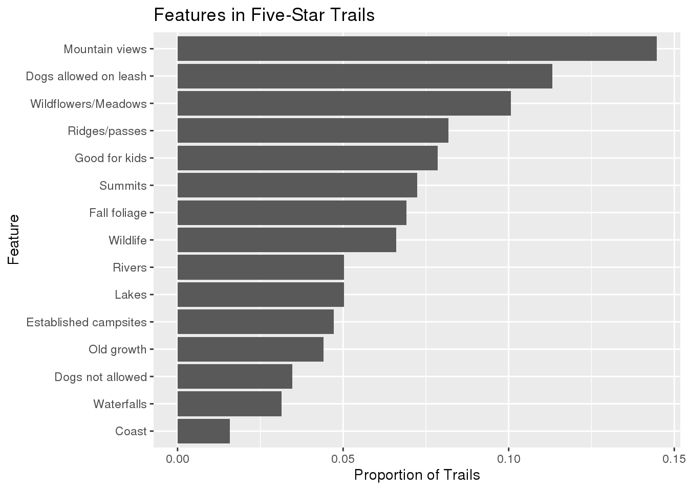

library(tidyverse)
library(here)
library(patchwork)
Using data from from the TidyTuesday GitHub page, I will analyze the popularity and features of different hiking trails in Washington state. The data comes from the file hike_data.rds, which has 1,958 observations and 8 variables. The variables in this data are name, the name of the trail as a character, location, the region and location of the trial as a character, length, the length of the trail as a character, gain, a character representing the gain in elevation as feet above sea level, highpoint, the max elevation of the trail as a character, rating, a character value representing a numeric user rating out of 5, features, a character list of features for each trail, and description, a character value giving a brief description of every trail.
dat <- read_rds(here('data', 'tidytuesday', 'data', '2020', '2020-11-24', 'hike_data.rds'))
trail_data <- dat %>%
separate(location, c('region', 'location'), sep = ' -- ') %>%
separate(length, c('length', 'unit'), sep = ' (?=miles)') %>%
mutate(length = as.numeric(length), gain = as.numeric(gain), highpoint = as.numeric(highpoint), rating = as.numeric(rating))
## Warning: Expected 2 pieces. Missing pieces filled with `NA` in 38 rows [34, 73,
## 271, 306, 537, 559, 599, 652, 672, 708, 718, 749, 799, 800, 835, 836, 889, 1014,
## 1033, 1100, ...].
Question 1:
Is there any association with rating and the region a trail is in? After some exploratory analysis, it appears that there are both a significant amount of trails with a five star rating and a zero star rating. We can plot the number of trails of each rating per region.
five_star_trails <- trail_data %>%
filter(rating == 5) %>%
group_by(region) %>%
summarize(count = n())
five_star_trails$region <- factor(five_star_trails$region,
levels = five_star_trails$region[order(
five_star_trails$count, decreasing = FALSE)])
p1 <- ggplot(five_star_trails, aes(x = region, y = count)) +
geom_col() +
coord_flip() +
labs(title = 'Five-Star Trails',
x = 'Region',
y = 'Count')
zero_star_trails <- trail_data %>%
filter(rating == 0) %>%
group_by(region) %>%
summarize(count = n())
zero_star_trails$region <- factor(zero_star_trails$region,
levels = zero_star_trails$region[order(
zero_star_trails$count, decreasing = FALSE)])
p2 <- ggplot(zero_star_trails, aes(x = region, y = count)) +
geom_col() +
coord_flip() +
labs(title = 'Zero-Star Trails',
x = 'Region',
y = 'Count')
p1 + p2
 Comparing the two plots, it seems that both ratings seem to follow similar distributions per region. Each region, when ranked, falls in the same area within two places in the other distribution. The conclusion I can draw from this is that there is little association between the region a trail is in and its rating. For example, the high number of trails that are five-star and zero-star in
Comparing the two plots, it seems that both ratings seem to follow similar distributions per region. Each region, when ranked, falls in the same area within two places in the other distribution. The conclusion I can draw from this is that there is little association between the region a trail is in and its rating. For example, the high number of trails that are five-star and zero-star in Eastern Washington suggests that there are simply a large number of trails in the region.
Question 2:
What features are most common in highly rated trails? We can determine this by filtering for trails that have a five-star rating, unlisting the features (which are separated into lists per trail) for each trail, storing the entire list of features as a dataframe, then counting the number of each unique feature.
five_star_trail_features <- trail_data %>%
filter(rating == 5) %>%
select(features)
trail_features_unlist <- tibble(feature = unlist(five_star_trail_features$features,
recursive = FALSE))
trail_features_count <- trail_features_unlist %>%
group_by(feature) %>%
summarize(count = n())
trail_features_count$feature <- factor(trail_features_count$feature,
levels = trail_features_count$feature[order(
trail_features_count$count, decreasing = FALSE)])
ggplot(trail_features_count, aes(x = feature, y = count)) +
geom_col() +
coord_flip() +
labs(title = 'Popular Features for Washington Trails',
x = 'Feature',
y = 'Count')
The data reveals that there are many common features associated with high ratings. Notably, Mountain views occurs most in the data.
Question 3:
Is there any relationship between rating and trail elevation? This can be determined by plotting both the total height gain and the maximum elevation against a trail’s rating.
ggplot(trail_data, aes(x = rating, y = gain)) +
geom_jitter(width = 0.25) +
labs(title = 'Trail Rating Vs. Height Gain',
x = 'Trail Rating',
y = 'Height Gain (ft. above sea level)')

There doesn’t appear to be any discernible association between height gain and trail rating. The clustering around ratings of 0 is likely to be associated with a number of unrated trails.
ggplot(trail_data, aes(x = rating, y = highpoint)) +
geom_jitter(width = 0.25) +
labs(title = 'Trail Rating Vs. Highpoint',
x = 'Trail Rating',
y = 'Highpoint (ft. above sea level)')
Similarly, there doesn’t seem to be any association with rating and maximum elevation.